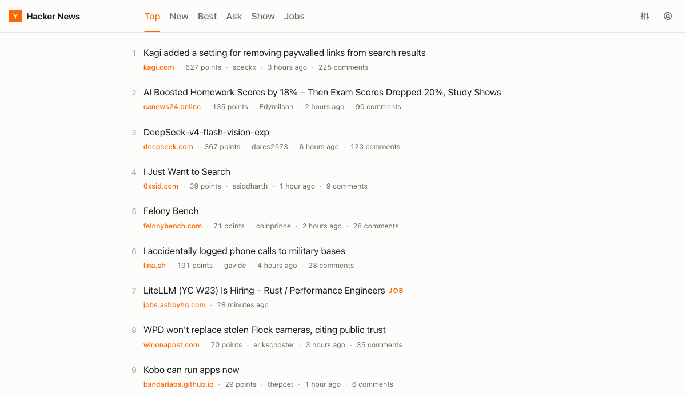
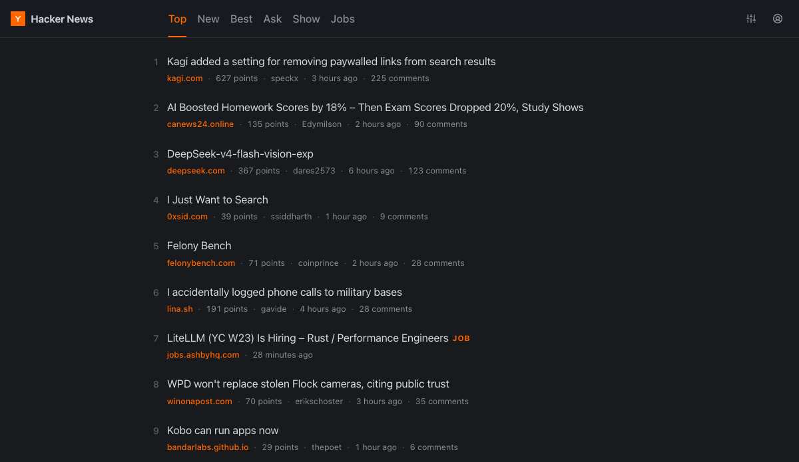
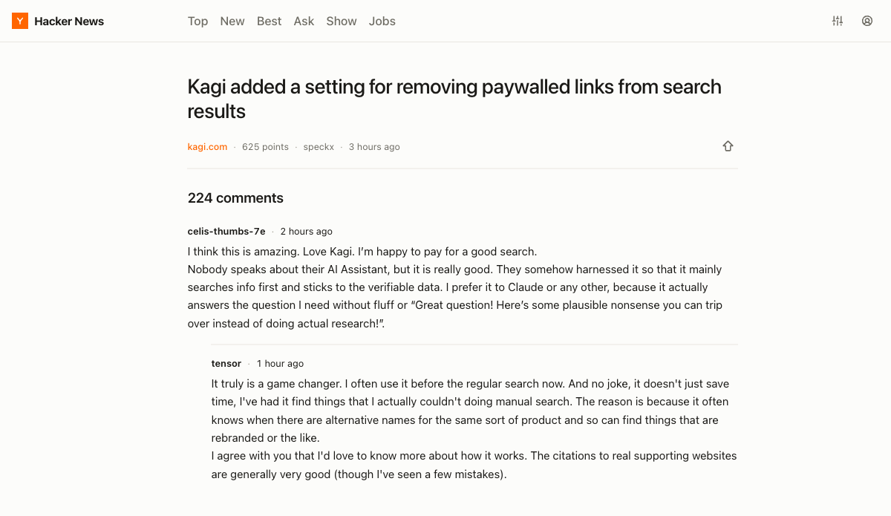
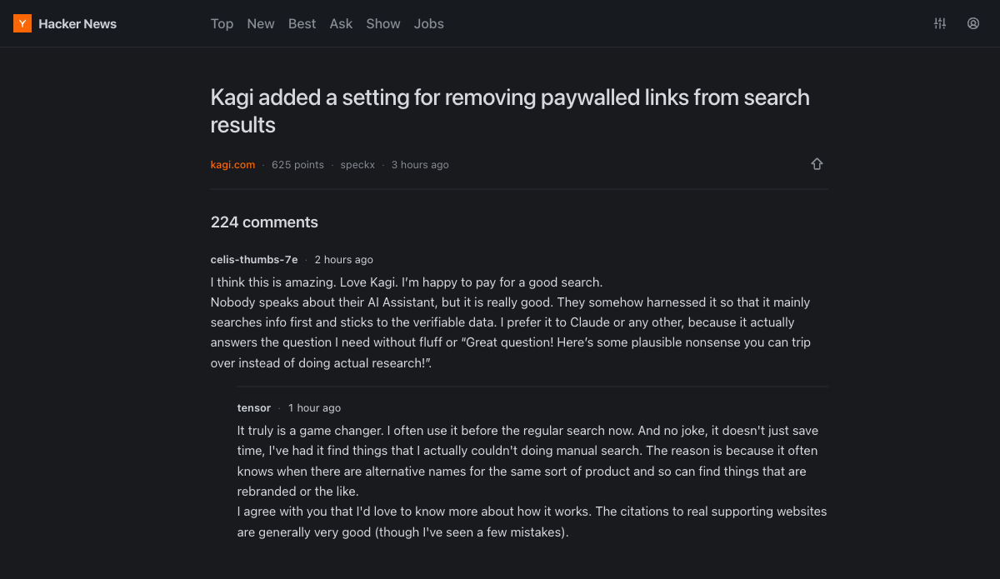
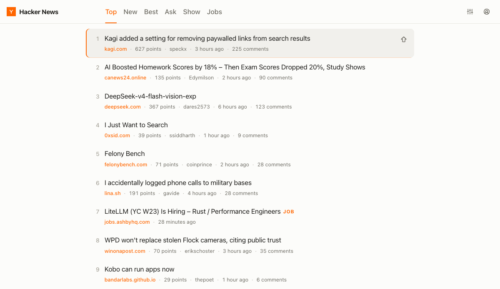
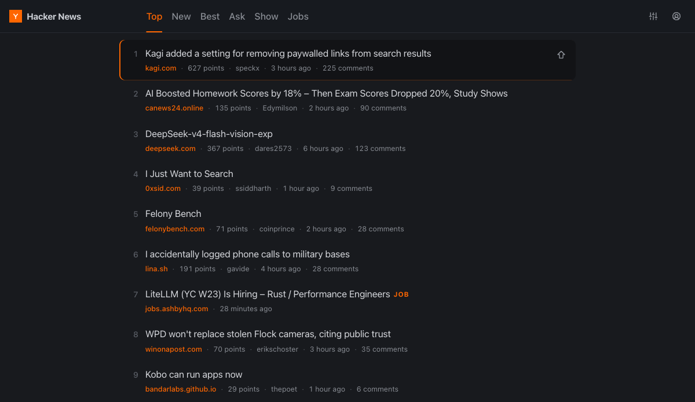

Scannable lists
Domain, score, author, age and comment count on every row.
I got frustrated with modern’s lack of maintenance and decided to build my own. Open news.ycombinator.com and Easy takes over the page.

Easy restyles the page Hacker News already sends you. You get the same stories and the same account, just easier to read.


Domain, score, author, age and comment count on every row.


Comfortable line lengths, nesting you can follow, and one-click collapse.


jk to move, o to open, c for comments.

Theme, font, size and density.
Get it from the Chrome Web Store. Click Add to Chrome and it’s ready. No separate app, no account.
Not yet. There’s no listing on the Firefox Add-ons store, but you can build and
load it manually: grab
easyhn-<version>-firefox.zip from
Releases, open
about:debugging#/runtime/this-firefox, choose
Load Temporary Add-on, and select the zip itself without unzipping it.
Firefox drops temporary add-ons when it restarts, so you’ll reload it each session.
If a Firefox listing matters to you, open an issue on GitHub.
No. Easy restyles the markup Hacker News already sent to your browser. There’s no API, no server in between, no tracking and no account.
Yes. Log in from the header. The upvote arrows and the inline reply box then work through your existing Hacker News session.
No. Pages Easy doesn’t redesign are left untouched, so everything else on the site works as usual.
Because Easy reads Hacker News’ own server-rendered markup, a significant change there can break it. It’s MIT-licensed on GitHub, so issues and PRs are welcome.
Free and open source, and it never asks you to sign up for anything.